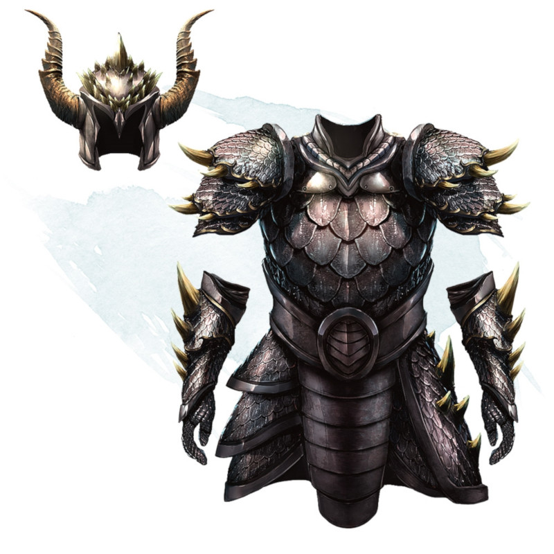

Armure d'écailles de dragon
Armure (armure d'écailles), très rare (nécessite un lien)
Une armure d'écailles de dragon est fabriquée à partir des écailles d'une sorte de dragon. Parfois les dragons récoltent les écailles qu'ils ont perdues et les offrent aux humanoïdes. Dans d'autres cas, des chasseurs écorchent avec soin et préservent la peau écailleuse des dragons morts. Quoi qu'il en soit, une armure d'écailles de dragon est un objet très précieux et très apprécié.
Tant que vous portez cette armure, vous obtenez un bonus de +1 à la CA, vous avez un avantage à vos jets de sauvegarde contre la Présence terrifiante et les souffles des dragons, et vous avez la résistance à un type de dégâts déterminé par le type de dragon dont proviennent les écailles (voir la table ci-dessous).
De plus, vous pouvez concentrer vos sens, en utilisant une action, pour déterminer magiquement la distance et la direction du dragon (de même type que votre armure) le plus proche de vous et situé à 45 kilomètres maximum. Cette action spéciale ne peut pas être réutilisée avant le prochain lever de soleil.
Tant que vous portez cette armure, vous obtenez un bonus de +1 à la CA, vous avez un avantage à vos jets de sauvegarde contre la Présence terrifiante et les souffles des dragons, et vous avez la résistance à un type de dégâts déterminé par le type de dragon dont proviennent les écailles (voir la table ci-dessous).
De plus, vous pouvez concentrer vos sens, en utilisant une action, pour déterminer magiquement la distance et la direction du dragon (de même type que votre armure) le plus proche de vous et situé à 45 kilomètres maximum. Cette action spéciale ne peut pas être réutilisée avant le prochain lever de soleil.
| Dragon | Résistance |
|---|---|
| Blanc | Froid |
| Bleu | Foudre |
| Noir | Acide |
| Rouge | Feu |
| Vert | Poison |
| Airain | Feu |
| Argent | Froid |
| Bronze | Foudre |
| Cuivre | Acide |
| Or | Feu |
Dungeon Master´s Guide (SRD)
